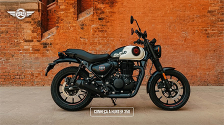

Velocidade máxima
A velocidade máxima real da Royal Enfield Hunter 350 fica entre 114 km/h e 120 km/h em condições normais de uso, embora alguns testes e pilotos relatem conseguir picos de até 130 km/h em descidas ou com o motor esgotando o limite.
- Velocidade máxima (Top Speed): Cerca de 114 a 120 km/h
- Velocidade de cruzeiro ideal: Entre 90 km/h e 100 km/h para viagens confortáveis e sem forçar o motor de 349 cc.
- 20,2 cavalos a 6.100 RPM, ideal para o trânsito urbano e deslocamentos diários.
Qualidades e Pontos Positivos
- Acabamento e construção: Apresenta soldas bem feitas, pintura de qualidade e peças firmes, sem rebarbas aparentes, superando o padrão de muitas concorrentes diretas.
- Desempenho urbano: O motor monocilíndrico de 349 cc entrega cerca de 20 cv e um torque forte logo em baixas rotações, o que torna a pilotagem ágil e divertida no trânsito.
- Custo-benefício: Conforme avaliado pela Revista Duas Rodas, o modelo entrega porte de moto maior e ABS de canal duplo por um preço competitivo se comparado a motos menores do mercado nacional.
- Ergonomia: Com altura de assento acessível (79 cm) e peso bem distribuído, é fácil de manobrar e ideal para iniciantes.
- Estrada: A velocidade máxima fica próxima de 120 km/h, o que limita ultrapassagens mais seguras em rodovias de pista dupla.
- Uso com garupa: O conforto diminui em viagens longas para o passageiro.
FICHA TÉCNICA - ROYAL ENFIELD HUNTER 350
| PREÇO | R$ 19.990,00 |
| MOTOR | 1 cilindro, 350 cc |
| ALIMENTAÇÃO | Injeção eletrônica |
| COMBUSTÍVEL | Gasolina |
| POTÊNCIA | 20,2 cavalos a 6.100 rpm |
| TORQUE | 27 Nm a 4.000 rpm |
| CONSUMO | 36,2 km/l |
| DIÂMETRO X CURSO | 75 mm x 85,8 mm |
| VELOCIDADE MÁXIMA | 114 km/h |
| CÂMBIO | 5 marchas |
| ENTRE-EIXOS | 1.370 mm |
| ALTURA DO ASSENTO | 800 mm |
| PESO | 181 kg |
| TANQUE | 13 litros |
| FREIOS | ABS nas duas rodas (ou só na dianteira, na Retro) |
| FREIO DIANTEIRO | Disco de 300 mm |
| FREIO TRASEIRO | Disco de 270 mm (ou tambor, na Retro) |
| PNEU DIANTEIRO | 110/70-17 54P (sem câmara) |
| PNEU TRASEIRO | 140/70-17 56P (sem câmara) |
| SUSPENSÃO DIANTEIRA | Telescópica, garfos de 41 mm |
| SUSPENSÃO TRASEIRA | Dupla mola, com pré-carga ajustável em 6 níveis |
| CORES | Rebel Blue, Rebel Red, Rebel Black, Dapper Ash, Dapper White e Dapper Gray |